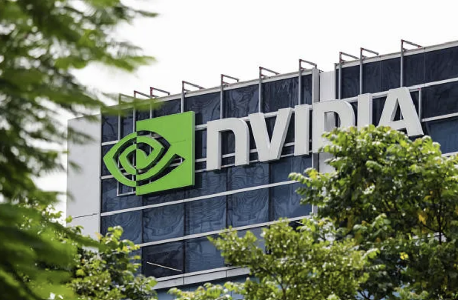

Dimiteix el CEO de Nvidia
Publicat el 22/11/2026

Després de liderar la companyia durant més de tres dècades i convertir-la en el gegant mundial dels xips per a intel·ligència artificial, el director executiu de Nvidia ha anunciat per sorpresa la seva dimissió.
La notícia ha provocat una forta sacsejada als mercats financers, amb una caiguda inicial de les accions de la fabricant de GPU mentre s'espera el nomenament del seu successor.